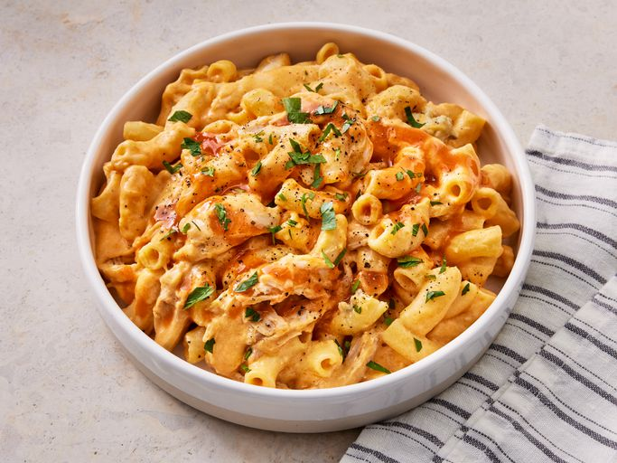

Buffalo Mac and Cheese

Description
This is a Mac and Cheese with a twist! Comes with a bit of Buffalo Chicken, boosting its flavour!
Ingredients
- 16 oz. Elbow macaroni
- 1 Rotisserie-roasted Chicken
- 6 tbsp. Butter
- 6 tbsp. All-purpose flour
- 3 cups Milk
- 1 pinch Ground black pepper
- 2 cups Shredded Cheddar cheese
- 2 cups Shredded Montery Jack cheese
- 1/2 cup Hot sauce
- 1/2 cup Crumbled gorgonzola cheese
Steps
- Bring a large pot of lightly salted water to a boil. Cook macaroni in the boiling water, stirring occasionally until tender yet firm to the bite, about 8 minutes. Drain.
- Cut wings and legs off rotisserie chicken. Remove skin and bones from wings and legs; chop or shred dark meat into bite-sized pieces.
- Melt butter in a large Dutch oven over medium heat. Gradually whisk in flour until a thick paste forms. Cook until golden, about 1 minute.
- Pour in milk, whisking constantly, until thickened and bubbling, about 5 minutes. Continue to cook and stir until sauce is smooth, about 1 minute more. Reduce heat and season with pepper.
- Stir Cheddar and Monterey Jack into the sauce until melted and combined.
- Stir in hot sauce to the desired level of spiciness.
- Add Gorgonzola, chicken, and macaroni; mix well to combine.
- Serve hot and enjoy!